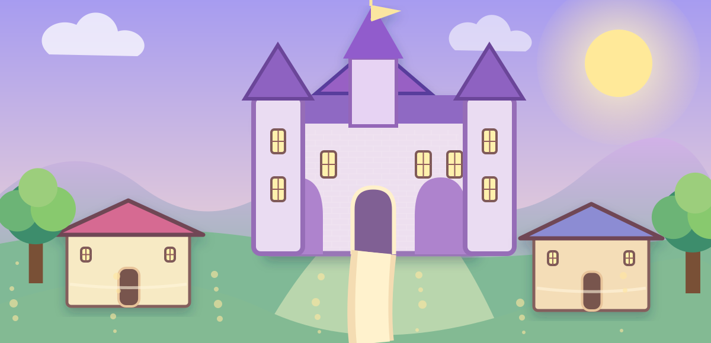

Role-Play
Be royalty, a villager, a mysterious traveler, a knight, healer, baker, scholar, or someone entirely new.
WELCOME, TRAVELER
Wander the castle town, enter the royal court, attend festivals, solve secrets, choose a role, follow a tale—or simply sit beneath the lanterns and enjoy the world.

Be royalty, a villager, a mysterious traveler, a knight, healer, baker, scholar, or someone entirely new.
Roam freely through the castle, village, forest, market, harbor, gardens, cottages, and hidden paths.
Step into branching fairy tales where your choices change conversations, clues, friendships, and endings.
Investigate missing jewels, secret tunnels, masked guests, strange letters, and whispers behind castle doors.
Accept royal errands, village favors, enchanted journeys, rescue missions, riddles, and treasure hunts.
Play fairground games, royal trivia, memory challenges, riddles, festival contests, and tavern-style puzzles.
No quest. No score. No pressure. Visit a peaceful place, read a little, listen to the kingdom, and stay awhile.
Attend audiences, hear petitions, witness celebrations, meet nobles and servants, and make courtly choices.
LIVE IN THE KINGDOM
Choose a home, meet recurring townspeople, shop the market, change clothes, collect keepsakes, take carriage rides, and build your own ordinary fairy-tale life.
HAPPENING AROUND TOWN
FREE-EXPLORE MODE
You can leave any location whenever you want. Nothing here has to be completed.
ROLE-PLAY
Pick a starting role or invent your own. Your role changes the flavor of scenes—not your freedom.
STORY PATHS
These are original fairy-tale adventures. Your decisions change the route through each story.
MYSTERY BOARD
Inspect clues, question witnesses, and decide what happened before the royal procession begins.
QUEST BOARD
Short errands, strange journeys, and grand royal missions are all available. Pick only what sounds fun.
FESTIVAL GREEN
Play a quick game, collect festival ribbons, or just browse the booths.
JUST VISIT
Pick a peaceful corner of the kingdom. Stay as long as you like.
The river carries gold reflections beneath the old stone bridge. Somewhere in town a violin is playing softly.
THE ROYAL COURT
Hear a petition and decide how your character responds—or simply watch the court unfold.
KINGDOM LIFE
Your coins, home, clothing, keepsakes, friendships, and little discoveries stay saved on this device.
Meet royals, villagers, servants, merchants, scholars, guards, children, travelers, and familiar faces who remember you.
Spend kingdom coins on clothing, food, books, trinkets, flowers, gifts, and curious objects.
Choose where you live—from a village cottage to rooms inside Roseglass Castle.
Choose your current outfit and collect new pieces from shops and festivals.
Take a carriage, ride horseback, walk the lanes, or catch a harbor boat to special destinations.
See recurring seasonal celebrations and enter special festival scenes.
Meet the ruling household, trace family history, hear old scandals, and learn why Roseglass Castle became the royal seat.
Choose a kingdom occupation, work short shifts when you feel like it, earn coins, and unlock role-play moments.
Open personal letters, invitations, notices, and the latest little stories from around the kingdom.
Travel beyond Storybook Kingdom to nearby courts, villages, forests, ports, and mountain roads.
Choose morning, afternoon, evening, or night and watch scenes around the kingdom change with the hour.
Build gentle story relationships, share outings, exchange letters, and choose whether a bond stays friendship, courtship, or simply acquaintance.
Decorate your chosen home with beds, tables, bookshelves, rugs, flowers, paintings, hearth pieces, and little comforts.
Spend time at the tavern, inn, stable, blacksmith, dressmaker, apothecary, schoolhouse, and bathhouse.
Enter masquerades, tournaments, royal weddings, holiday feasts, coronation celebrations, and village fairs.
Play multi-part events that remember earlier choices and continue across several visits.
Choose spring rain, summer sunshine, autumn wind, winter snow, fog, storms, or a clear starry night and watch daily scenes adapt.
Wake up, prepare meals, host tea, receive callers, tend a garden, read by the fire, or end the day quietly at home.
Town chatter remembers some of your choices. Build a reputation for kindness, mystery, scholarship, courage, or festive spirit.
Move through a twelve-day story month filled with market days, court sessions, fairs, celebrations, quiet days, and surprise happenings.
Open additional replayable investigations with suspects, clues, deductions, and saved case progress.
Spend a morning, afternoon, evening, or night following ordinary routines around the castle, village, market, harbor, or abbey.
Explore the kitchens, ballroom, throne room, servants’ corridors, library, towers, guest wing, chapel, nursery, and hidden passages.
Collect original fairy tales, legends, songs, family histories, recipes, maps, and pieces of kingdom lore.
Earn gentle story titles and keepsakes from exploration, kindness, mysteries, festivals, scholarship, and ordinary life.
Open a random kingdom event that may become a conversation, invitation, rumor, discovery, tiny problem, or completely peaceful moment.
Receive follow-up letters from people you know, with wording that changes according to friendships, visits, and story progress.
Play longer quests whose later scenes remember earlier decisions without trapping you in one path.
Explore cellars, old aqueducts, forgotten stairs, sealed doors, smugglers’ routes, and the passages beneath Roseglass Castle.
Visit six nearby settlements with their own people, customs, shops, rumors, and small-town problems.
Attend optional lessons in lore, maps, etiquette, herbs, music, riddles, history, and practical castle-town skills.
Try short shifts in the kitchens, library, stables, gardens, guest wing, messenger office, and festival staff.
Follow longer stories that unfold over spring, summer, autumn, and winter while remembering your choices.
Spend time gardening, baking, fishing, sewing, painting, reading, singing, stargazing, picnicking, or doing nothing at all.
Try royal, noble, merchant, artisan, servant, farmer, traveler, or village life without locking your character into one class.
Meet horses, choose a favorite mount, groom, ride, train gently, or take a peaceful countryside route.
Plan menus, prepare dishes, attend banquets, host supper, bake festival food, or eat quietly in the kitchens.
Watch plays, sing, perform, rehearse, join a village pageant, or attend a royal concert beneath the chandeliers.
Keep a record of the neighboring realms and villages you have visited, along with stamps, memories, and travel notes.
Mix a hero, setting, mystery, object, companion, and ending style to create a new original story prompt whenever you want.
Follow a longer rags-to-royalty-style saga about village life, opportunity, identity, friendship, and choosing what “happily ever after” means.
See your character, home, coins, relationships, visits, stories, mysteries, titles, collections, and overall kingdom history in one place.
Export your Storybook Kingdom progress to a backup file, import it later, or reset only when you deliberately choose to.
TODAY'S LITTLE MOMENT
PEOPLE OF STORYBOOK KINGDOM
Talk to someone, give a small gift, hear gossip, or simply visit.
MARKET & SHOPS
Nothing here uses real money. Coins are earned only inside Storybook Kingdom.
YOUR HOME
You can change homes whenever you like. There is no rent and no penalty.
ROYAL WARDROBE
Your wardrobe grows through shops, festivals, stories, and discoveries.
CARRIAGES & TRAVEL
Travel creates short scenes and can uncover small keepsakes or rumors.
FESTIVAL CALENDAR
Enter any festival whenever you want; Storybook Kingdom does not make you wait for the real calendar.
THE HOUSE OF ROSEGLASS
Explore the ruling household without needing to follow a quest.
JOBS & TRADES
Work is optional. Pick a trade for role-play, earn a few coins, then leave whenever you like.
POST & KINGDOM GAZETTE
Read invitations, notes, notices, gossip columns, and harmless little headlines from around town.
BEYOND THE KINGDOM
These nearby realms expand the world without replacing Storybook Kingdom as your home base.
KINGDOM CLOCK
Storybook Kingdom does not force real-world time on you. Pick the atmosphere you feel like.
COURTSHIP & COMPANIONS
Nothing is forced. Keep a person as a friend, grow closer, or simply enjoy a single outing.
HOME & FURNISHINGS
Collect furniture and decorate without rent, upkeep, or pressure.
CASTLE-TOWN LIFE
These places are for role-play, errands, conversation, comfort, and small discoveries.
GRAND EVENTS
Choose any celebration whenever you want. Events are replayable and do not expire.
LIVING STORYLINES
Each storyline unfolds in chapters and remembers where you stopped.
SEASONS & WEATHER
Pick the atmosphere you want. Weather changes descriptions and suggested activities without blocking anything.
HOUSEHOLD LIFE
Your home can be active, social, productive, or completely restful.
RUMORS & REPUTATION
Reputation is descriptive, not a score you have to maximize. You can change direction whenever you like.
KINGDOM CALENDAR
The calendar is fictional and advances only when you choose. Nothing expires.
MYSTERY CASEBOOK
Inspect evidence, question possibilities, and make your own deduction.
CASTLE-TOWN ROUTINES
Choose a place and follow a short chain of everyday moments.
INSIDE ROSEGLASS CASTLE
Choose a room, corridor, or hidden corner. You can explore without starting a quest.
STORYBOOK LIBRARY
Open collected tales, legends, household books, songs, recipes, and pieces of lore.
TITLES & KEEPSAKES
These are story souvenirs, never requirements or rankings.
SOMETHING HAPPENED TODAY
The event can be dramatic, funny, cozy, mysterious, social, or wonderfully uneventful.
LIVING CORRESPONDENCE
Letters change as friendships, places, and stories become familiar.
CHOICE-REMEMBERING QUESTS
Each quest remembers earlier decisions and changes later scenes, but you can replay or choose differently anytime.
BENEATH THE KINGDOM
Explore old tunnels at your own pace. Some are mysterious; some are simply old infrastructure.
BEYOND THE CASTLE TOWN
Small communities with distinct rhythms, neighbors, trades, and local stories.
ROYAL ACADEMY
Short optional lessons add flavor to role-play. There are no grades and no required assignments.
A DAY ON STAFF
Try a shift for coins and story moments, then leave whenever you like.
STORIES THROUGH THE YEAR
Four longer storylines designed to feel like life moving through the kingdom.
NO-PRESSURE TIME
Choose something small to do because it sounds pleasant—not because the kingdom needs saving.
WAYS TO LIVE HERE
A path changes the flavor of your day, not your worth or your freedom. Switch whenever you like.
ROYAL STABLES
Choose a favorite mount, care for it, ride, or simply spend a quiet hour in the stable yard.
TABLES OF THE KINGDOM
Food can be ceremonial, cozy, festive, ordinary, or just something warm from the bakery.
STAGE & SONG
Watch, rehearse, sing, act, tell stories, or stay comfortably in the audience.
TRAVEL RECORD
A keepsake record of where you have wandered. It never blocks travel and never expires.
STORY WORKSHOP
Generate an original premise, then reshape any part until it sounds like a story you want to enter.
LONG-FORM STORY
A multi-part fairy-tale saga about a person from an ordinary village household whose choices gradually bring them into royal life.
MY KINGDOM BOOK
This is a record of what you have chosen to explore—not a completion checklist.
SAVE & RESTORE
Download a local backup of your browser save, restore one later, or deliberately reset the kingdom.